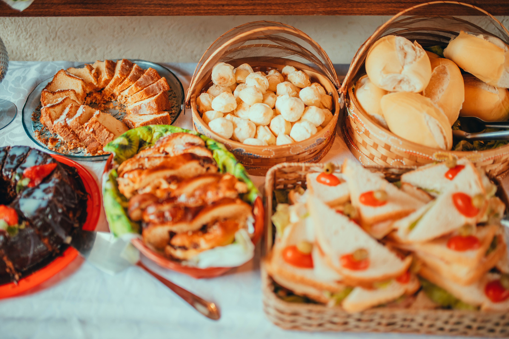
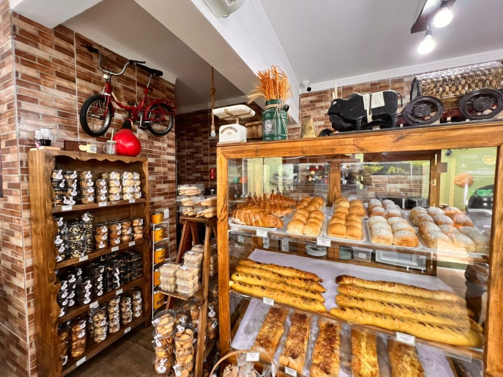
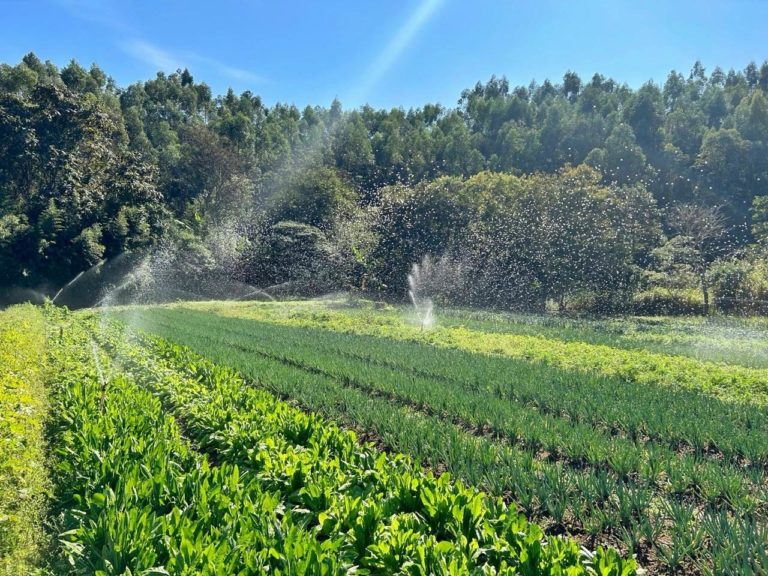
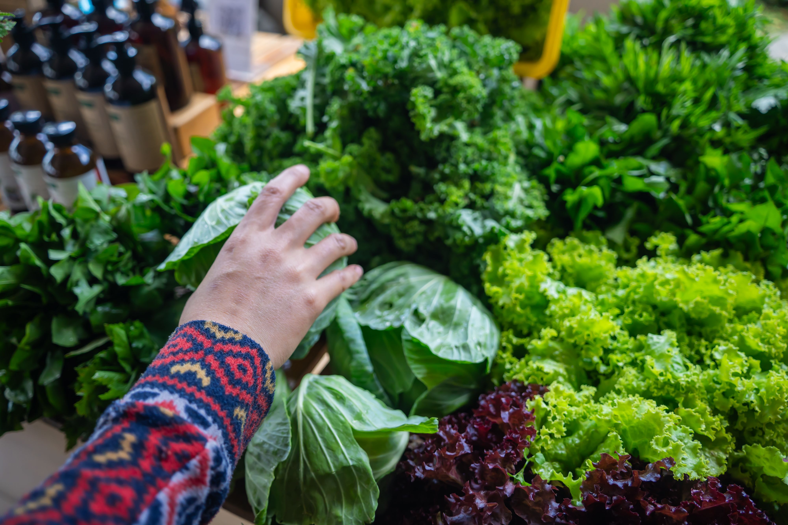
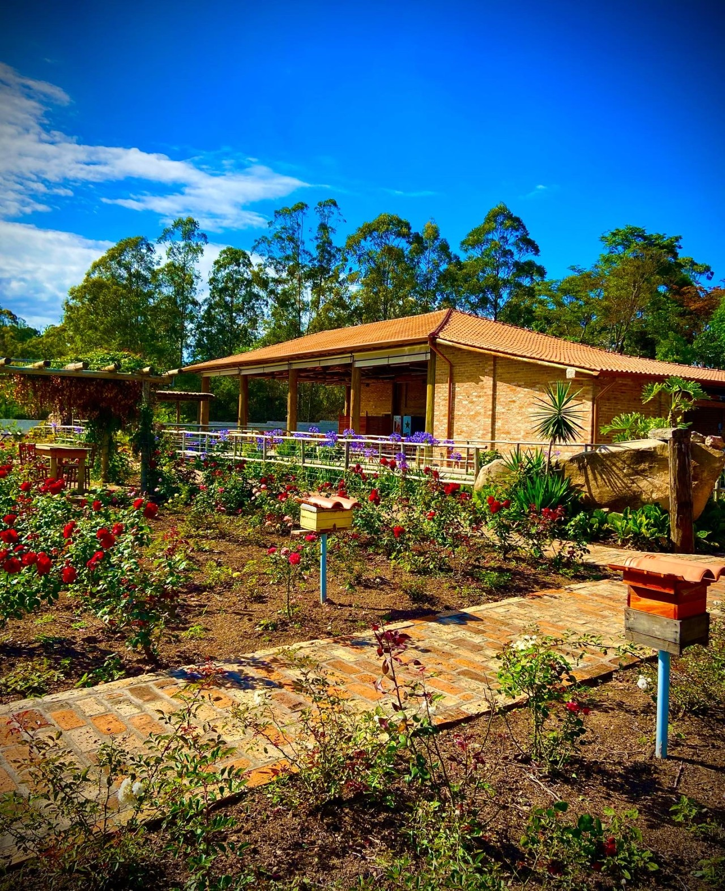
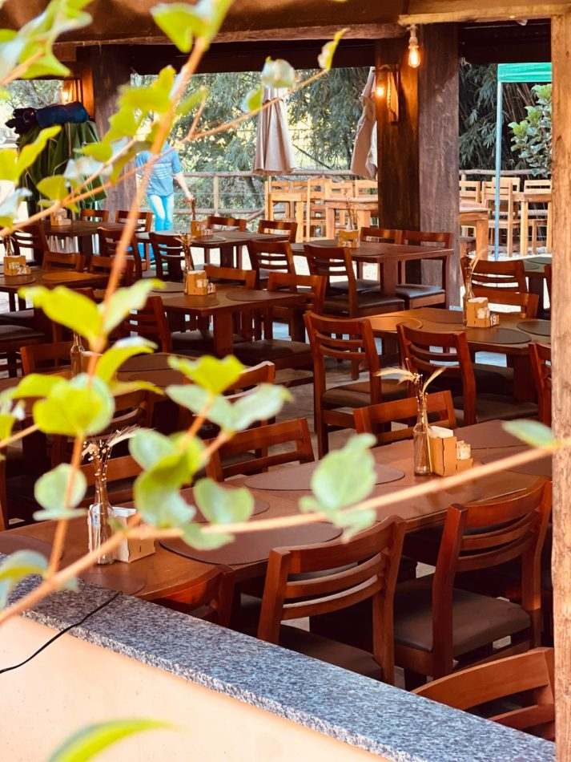
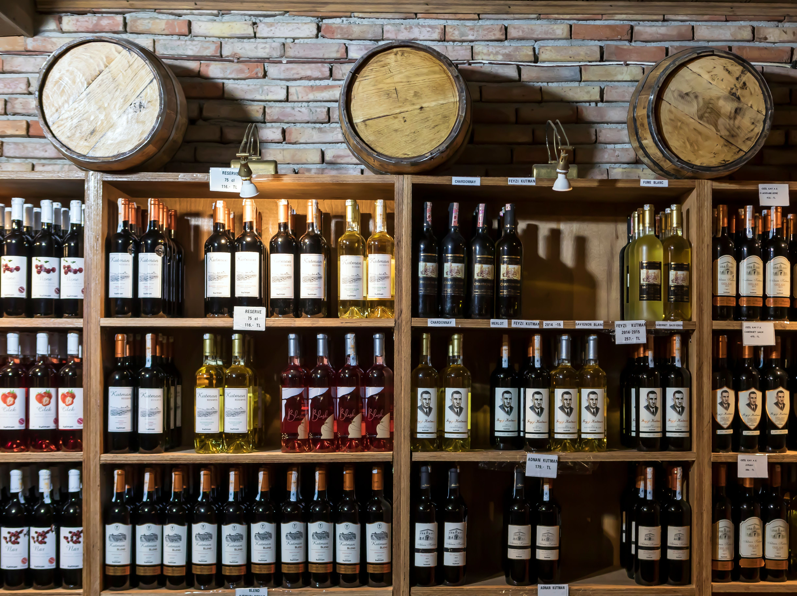
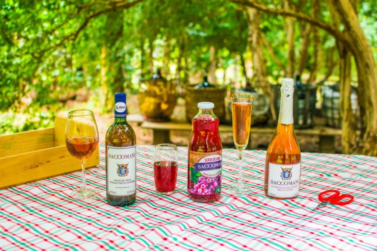
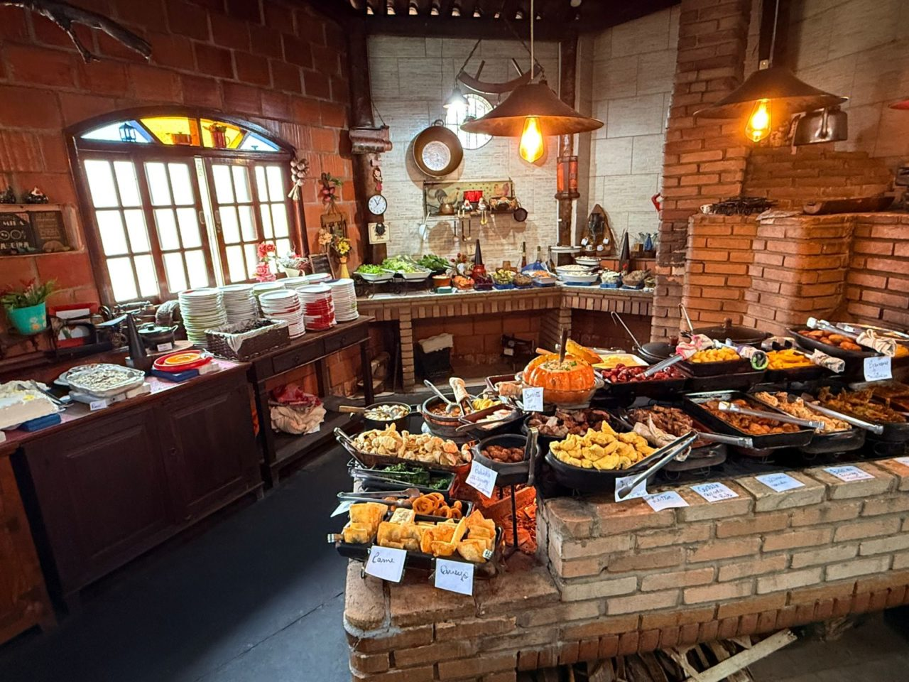
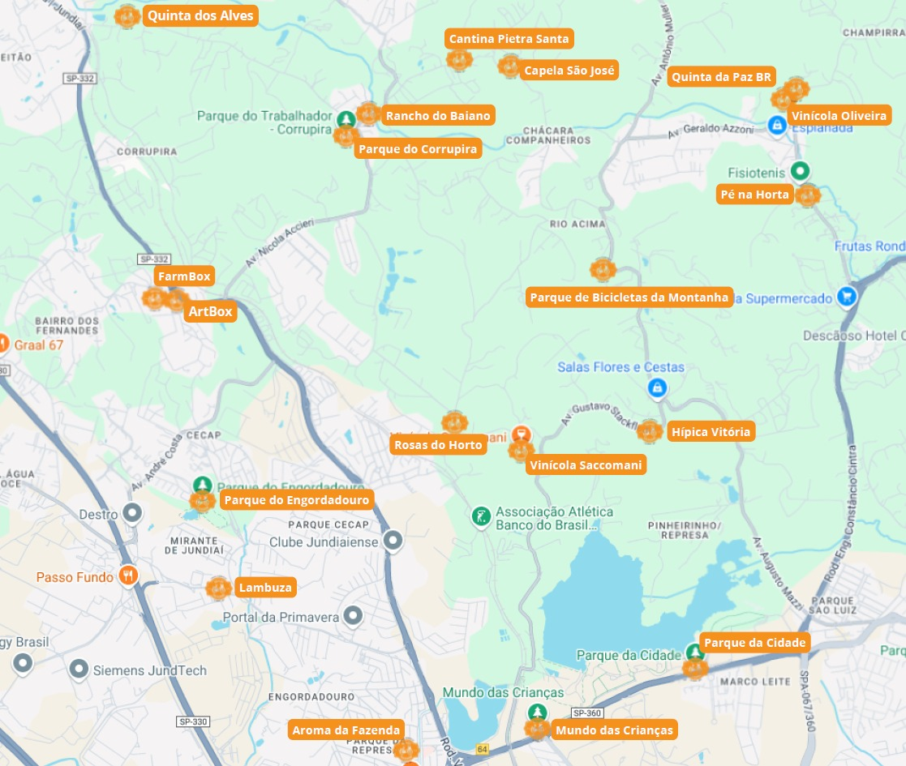

Rota dos Sabores
Descubra Jundiaí através dos sabores! A Rota dos Sabores reúne experiências gastronômicas, produtos artesanais, propriedades rurais e lugares especiais para conhecer e aproveitar.
Uma rota para experimentar a culinária local, conhecer produtores e descobrir novos sabores de Jundiaí.
EXPERIÊNCIAS E SABORES
Conheça alguns lugares que fazem parte da experiência gastronômica de Jundiaí.

Aroma da Fazenda
Padaria artesanal com fermentação natural, ambiente rústico e aconchegante e diversas opções de pães e produtos artesanais.
R. Olívio Boa, 351 - Parque da Represa, Jundiaí - SP, 13214-550
Conheça
Pé na Horta
Sítio familiar que valoriza a agricultura e a produção de alimentos frescos, aproximando os visitantes da natureza.
Avenida Geraldo Azzoni, 990 - Rio Acima, Jundiaí - SP
Conheça
FarmBox
Uma das experiências apresentadas na Rota dos Sabores, conectando visitantes aos produtos e experiências locais.
Av. Santo Ceolin, 213 - Fernandes
Conheça
Rosas do Horto
Um dos empreendimentos apresentados pela Rota dos Sabores para quem deseja conhecer experiências especiais em Jundiaí.
Av. Carlos Martins, 800 - Bosque dos Pinheirinhos, Jundiaí - SP, 13215-735
Conheça
Quinta dos Alves
Um espaço que faz parte da Rota dos Sabores e oferece uma experiência ligada ao turismo e à produção local.
Av. Nilo Tracci, 291 - Corrupira
Conheça
Vinícola Oliveira
Há mais de 100 anos, a história da Vinícola Oliveira se entrelaça com a de Jundiaí. A tradição da família Oliveira atravessa gerações.
Av. Luiz Fontebasso, 397 - Champirra, Jundiaí - SP
Conheça
Vinícola Saccomani
Com uma história iniciada em 1885, a vinícola preserva a tradição familiar no cultivo de uvas e na produção de vinhos.
Horto Florestal - Jundiaí - SP
Conheça
Rancho do Baiano
Ambiente rústico, baseado na cozinha mineira, com comida feita e servida no fogão a lenha, em um estilo familiar e caseiro.
Avenida São José da Pedra Santa, 149 - São José da Pedra Santa, Jundiaí - SP
ConheçaMAPA DA ROTA DOS SABORES
Encontre os principais pontos da Rota dos Sabores e planeje seu passeio por Jundiaí.
